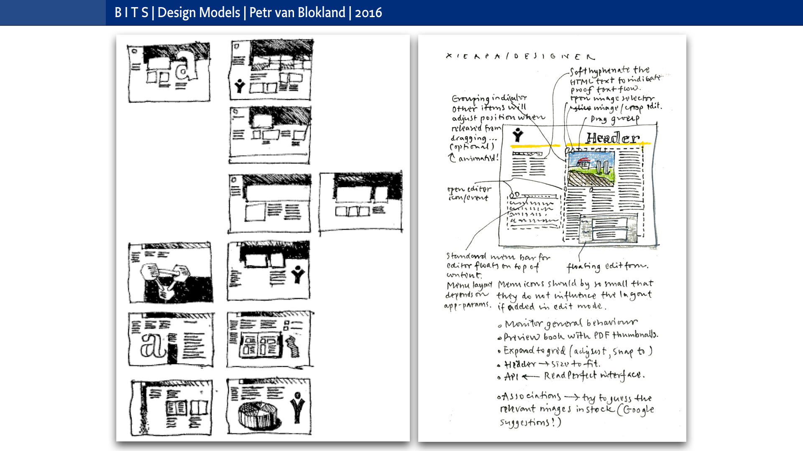
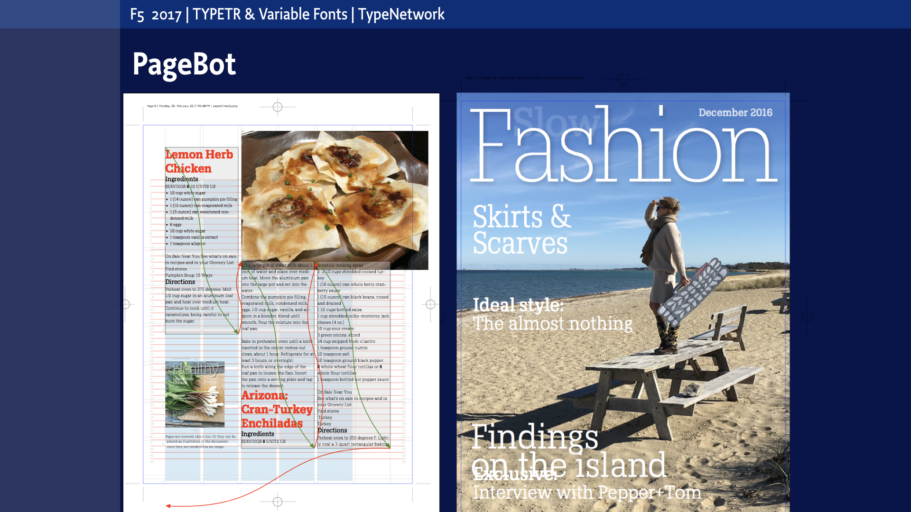
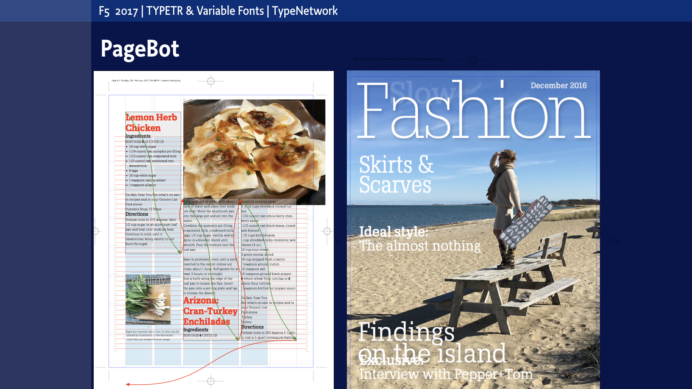
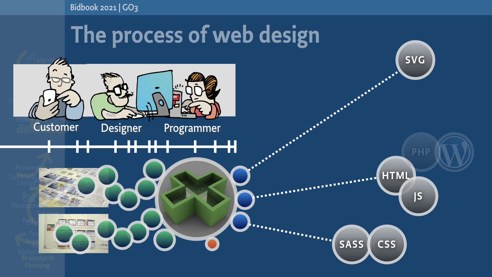

box = page['Footer']
box.html = doc.footerHtml
page = doc.newPage(title='Projects', name='projects.html')
box = page['Introduction']
What is it you want to specialize in, but never found the time and discipline?
box = page['Main']['Content']
What can you do?
What can you do in 1 day?
- Play an online Design Game, with a schedule described here.
What can you do in 1 week?
One or more of the example topics below. How much can you fit in a week?
- Sketch the basics of a corporate identity. Translate some of the parameters into PageBot code;
- Design a model exhibition space;
- Design a gridded page or a scripted infographic
- Draw a couple of TypeCooker words with feedback;
- Write code for a DrawBot animation;
- Examine how to select one of the above.
What can you do in 1 month?
A selection of the example topics below. Or one of your own?
- Study typographic parameters;
- Research, write, design and present a mini-thesis about a topic of your choice;
- Design a simple corporate identity;
- Or program the manual in PageBot;
- Simulate a graphic design studio;
- Design a Design Game and run it;
- Fill a Moleskine with 100 sketch pages. Then select the best.
What can you do in 1 season?
A selection of the example topics below. Or what else would you like to do?
- Develop a PageBot publication;
- Improve your sketching skills;
- Make some RoboFont tools;
- Design design education tools, such as games and feedback models;
- Do almost any design project that can be done in a month.
In 1 year?
A selection of the example topics below. Or maybe all of them?
- Become an independent typographer with noticable experience;
- Improve your experience as type designer. Or as design educator;
- Design Variable Font design spaces;
- Become a designer, who knows how to write code;
- Or how to communicatie with professional programmers in their own language;
- You can ask a lot of relevant questions to yourself. Accepting that the answers take a lot more time to formulate;
- Design deep spaces.
Specialization topics
In all of the five time frames (1 day, 1 week, 1 month, 1 season or 1 year) students can select a combination of specializations (where this selection process itself also is part of the design skills to be developed).
Essentially each time frame is a recursive copy of one of the others.
The difference between is the number of topics that can be addressed and the level of details possible.
Applying topics, process and context
A combination of two or more topics from the list below, in combination with process and context selection, gives students a unique personal research environment for development.
Topics
- Typography
- Type design
- Design for fashion
- Design of information visualization
- Interior and exhibition design
- Design for multiple media from single source
- Parametric design, programming and coding
- Corporate identity design
Process
- Design of research methods
- Sketching techniques
- Design the design process
- Presentation techniques
- Design of feedback and evaluation techniques
- Design of testing methods
Contexts
- Design education
- Working in teams, running a studio
- Dealing with customers
- Design for users
Each of these items contains a world of detailed knowledge and design parameters that can be developed with other students who select such a topic. As example, for typography (and with reference to adjacent topics) this next level could contain a selection of:
- Typographic parameters Categories, bandwidth of possible values, presentation examples, …
- Typographic layout Principles, adapting classic examples to contemporary applications, whitespace, aesthetics, …
- Typographic tools Grid, type, size, leading, spacing, kerning, width, hyphenation, orientation, contrast, color, pattern, proportion, ratio, interaction, position, meaning, language, any combination and addition to the parameters of Bertin, …
- Design the process Constraints, testing, planning, cooperation with other disciplines, research, marketing, promotion, difference between single solution and generative rules, selection and design of research methods, …
- Mathematics for designers Trigonometry, position, rotation, transformation matrices, column calculation, statistics, logarithmic, ranges, light game theory, principles of AI, neural networks and machine learning, …
- Type design Variation axes, parameters, selection criteria, process, tools, testing, publoshing, …
- Images as typographic elements Illustration, photography, infographics, graphs, icons, ...
- Subject matter Culture, fashion, politics, international relation, trade, education, …
- Typographic education Educating undergraduate students, customers, users, yourself inside design cycles, presenting, writing about …
- Programming Structure, hierarchy, design of algorithms, …
- Coding Starters and experienced coding designers. All relevant languages related to typography: deepest relevant of Python, Processing, CSS, HTML, XML, JS, PHP, Objective-C, …
- Tools PageBot publications, writing scripts for RoboFont, deepest of Adobe applications, AI related to design, scripting, OSX-terminal tools, design of information conversion flows, research on raw data, …
- Device Measurements resolution, distortion, proportion, memory usage, …
- Storage techniques File, database, formats, git, JSON, plist, XML, UFO, TTF, OTF, …
box = page['Main']['Side']
 Sketching is the process of eliminating unwanted options from the tree of all possibilities, without visualizing every single one of them.
 Sketching is the process of managing the level of details, throughout the process. One method is reduce the scale of drawings, as the resolution of tools (pencil or screen) automatically will hide irrelevant details.
Sketching is the process of managing the level of details, throughout the process. One method is reduce the scale of drawings, as the resolution of tools (pencil or screen) automatically will hide irrelevant details.
box = page['Section']['0']
 Artifical Intelligence (AI) probably has much influence on any profession in the coming years. How will it influence your design practice? Many models that apply to AI, also work in design. Those parallels can be subject of your study at Design Design Space.
Artifical Intelligence (AI) probably has much influence on any profession in the coming years. How will it influence your design practice? Many models that apply to AI, also work in design. Those parallels can be subject of your study at Design Design Space.
box = page['Section']['1']
 Here a comparing set is show of two opposite values. E.g. if a system is “Episodic”, it is possible to reject and correct earlier decisions (as in a design process). If the system is “Sequential”, then the order is fixed (as in a game of chess).
Here a comparing set is show of two opposite values. E.g. if a system is “Episodic”, it is possible to reject and correct earlier decisions (as in a design process). If the system is “Sequential”, then the order is fixed (as in a game of chess).
box = page['OtherMain']['Content']
Assignments
Below some example assignments.
Design of methods for selection and feedback
3 posters, similar and different in one series, for a topic of your choice. Assignemnt is how to judge the result and how to select from various judging methods. *How to develop criteria
Basic skills
Painting of color/gray ranges. Sketching with materials, proportions, ratio and contrast.
Although much of your work may have digital outcome, actually making stuff with real materials opens up new directions, other points of view.
Sketching techniques
One week to fill a 100 page Moleskine sketchbook, design for a specific subject, context or design challenge. The presentation is showing 5 best pages in combination with validation criteria used.
Design of research methods inside the design process
This is the integral assignment for TypeMedia 2017 students at the end of their Master year. They have limited time of 2 weeks to write and design 3 mini-thesis document of one page each. Illustrated and documented.
Design of an interactive poster
What is a relevant set of parameters for a poster? And how does interaction play a role in that? What is the design process? How do you test the intermediate result? What needs to happen to guearantee success?
Design of models for corporate identities
Research models where publications within a corporate identity can have different usage, technique and message, and still visually belong to the same brand. What are parameters and what freedom do designers have later in the process? Which of these parameters need to be documented? And which can be automated?
box = page['OtherMain']['Side']
 
PageBot is library of functions, based on the programming language Python, that can be used for the automated production of publication. Learning to use PageBot is an optional topic in Design Design Space study.

PageBot is library of functions, based on the programming language Python, that can be used for the automated production of publication. Learning to use PageBot is an optional topic in Design Design Space study.
 Constructing an environment where all disciplines can work together in a non-linear way, is one of the topics of the Design Design Space study.